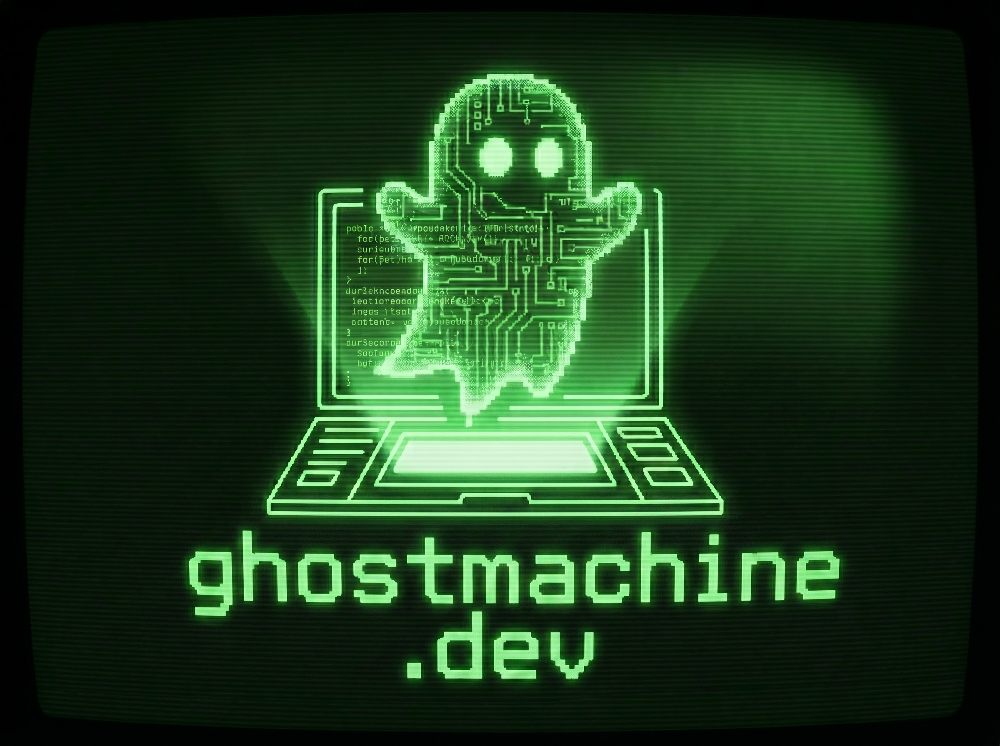

SYSTEM.STATUS: ONLINE
> INITIALIZING GHOSTMACHINE CORE...
> AUTONOMOUS SRE AGENT ENGAGED.
> FAULT DETECTION ACTIVE.
> AI REMEDIATION PIPELINE READY.
GhostMachine is an autonomous Site Reliability Engineering (SRE) system designed to detect, diagnose, and remediate faults in real-time. Utilizing advanced language models, it generates and tests patches before automatically submitting pull requests to ensure system uptime and stability.